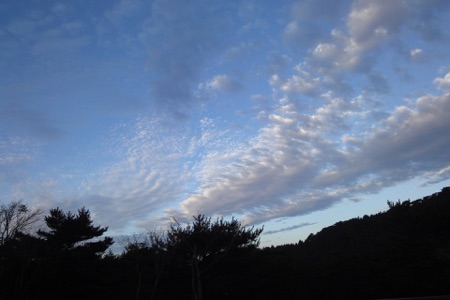

１３人のグランマザー国際会議に参加して
いろんなことがありすぎて まだ言葉がみつからないけれど
ただひとつ言えることは
琉球の神様と大和の神様はちがうということ
そして 奄美は琉球だ ということ
MEENA’s Diary
2010/11/20



私のなかにはその二つの血が流れている
なんだかずっと二つに引き裂かれそうな
迷子のような せつない気分のまま 島々を巡っていた
せっかくここまで来たのに
ご先祖様に会いにきたのに
１００年に一度の大雨が何年か前に降って その３倍の雨量だとか
そんなぁ。。。
でも霧島は素晴らしかった 大和の悠久さが漂っていた
奄美も素晴らしかった 人々も素朴で美しかった
もうこれ以上 開発はしないでほしい
都市化 観光化 独占 いいとこ取りの古い頭はいいかげん捨てて
７世代あとの子供達のためにも 今を生きる自分たちのためにも
手つかずの美しい自然の神秘を蘇らせてほしい
どこの川の水でも飲める 美しい水を蘇らせてほしい
美しい水源地に工場を造って水を独占しないでほしい
お金儲けのために自然を破壊するのは もうやめてほしい
自然を破壊する商品はもう作らないでほしい
文明を取り入れるなら 調和 循環 わかちあい という
美的感覚を憶い出してほしい
都市化 観光化ではなく 楽園化計画を進めてほしい 世界中
本当の豊さとは何か 憶い出してほしい
なんだか支離滅裂な文章だけれども
とにかく 人間はちっぽけな存在なんだ
地球がクシャミしたら みんな吹き飛ばされてしまう
どんなに武装しても何の意味もない
この宇宙に生かされている ということを憶いだして
この母なる地球を敬ってほしい 地球はパラダイスなんだよ
いろんなことがあって まだ興奮しているみたい
ご先祖様のお墓参りをして 那覇についたらハリシュから電話が入った
明日ハリシュのお母さんの１３回忌らしい！
実家にご挨拶しにいって ハリシュの家族に会ったら気分が晴れた
ハリシュの実家のすぐそばには普天間基地があり
家の真ん前に 以前はなかったマンションが立ちはだかり
海への眺めと日照が遮られ
国際道りは香港かと思う程キラビヤかで 大和資本の店建ちまくりだけど
みんな明るい
沖縄は 中国に占領され大和に占領されアメリカに占領され
でも琉球魂を忘れない と言っていた
沖縄やっぱ底力あるなぁ
１３人のグランマザー国際会議
世界のいろんな国の先住民やシャーマンのおばあちゃん達が中心となり
美しい地球を７世代先の子供達のために残すために祈る集い
今回はホスト役のクララが日系ブラジル人ということで
奄美で行なわれることになった
しかし記録的な大雨のために島に入れず
急遽場所が変更になり 九州霧島でグランマザー会議が行なわれた
しかし既に奄美入りしていた人たちもたくさんいて
奄美は沖縄からきたシャーマンが中心となり祈りの輪がつくられ
今回は異例の 二カ所で祈りの儀式が行なわれた